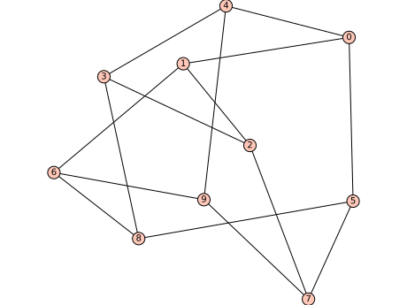

(For LaTeX drawings of graphs, see thegraph_latexmodule.)
All graphs have an associated Sage graphics object, which you can display:
sage: G=graphs.WheelGraph(15)sage: P=G.plot()sage: P.show()# long time
When plotting a graph created using Sage’s Graph command,
node positions are determined using the spring-layout algorithm.
Special graphs available from graphs.* have preset positions.
For example, compare the two plots of the Petersen graph,
as obtained using Graph or as obtained from that database:
sage: petersen_spring=Graph(':I`ES@obGkqegW~')sage: petersen_spring.show()# long time

sage: petersen_database=graphs.PetersenGraph()sage: petersen_database.show()# long time
All constructors in this database (except some random graphs) prefill
the position dictionary, bypassing the spring-layout positioning algorithm.
A layout algorithm – one of : “acyclic”, “circular” (plots the graph with vertices evenly distributed on a circle), “ranked”, “graphviz”, “planar”, “spring” (traditional spring layout, using the graph’s current positions as initial positions), or “tree” (the tree will be plotted in levels, depending on minimum distance for the root).
iterations
The number of times to execute the spring layout algorithm.
heights
A dictionary mapping heights to the list of vertices at this height.
spring
Use spring layout to finalize the current layout.
tree_root
A vertex designation for drawing trees. A vertex of the tree to be used as the root for the layout='tree' option. If no root is specified, then one is chosen close to the center of the tree. Ignored unless layout='tree'.
forest_roots
An iterable specifying which vertices to use as roots for the layout='forest' option. If no root is specified for a tree, then one is chosen close to the center of the tree. Ignored unless layout='forest'.
tree_orientation
The direction of tree branches – ‘up’, ‘down’, ‘left’ or ‘right’.
save_pos
Whether or not to save the computed position for the graph.
dim
The dimension of the layout – 2 or 3.
prog
Which graphviz layout program to use – one of “circo”, “dot”, “fdp”, “neato”, or “twopi”.
by_component
Whether to do the spring layout by connected component – a boolean.
pos
The position dictionary of vertices.
vertex_labels
Vertex labels to draw. This can be True/False to indicate whether to print the vertex string representation of not, a dictionary keyed by vertices and associating to each vertex a label string, or a function taking as input a vertex and returning a label string.
vertex_color
Default color for vertices not listed in vertex_colors dictionary.
vertex_colors
A dictionary specifying vertex colors: each key is a color recognizable by matplotlib, and each corresponding value is a list of vertices.
vertex_size
The size to draw the vertices.
vertex_shape
The shape to draw the vertices. Currently unavailable for Multi-edged DiGraphs.
edge_labels
Whether or not to draw edge labels.
edge_style
The linestyle of the edges. It should be one of “solid”, “dashed”, “dotted”, dashdot”, or “-”, “–”, “:”, “-.”, respectively.
edge_thickness
The thickness of the edges.
edge_color
The default color for edges not listed in edge_colors.
edge_colors
A dictionary specifying edge colors: each key is a color recognized by matplotlib, and each corresponding value is a list of edges.
color_by_label
Whether to color the edges according to their labels. This also accepts a function or dictionary mapping labels to colors.
partition
A partition of the vertex set. If specified, plot will show each cell in a different color; vertex_colors takes precedence.
loop_size
The radius of the smallest loop.
dist
The distance between multiedges.
max_dist
The max distance range to allow multiedges.
talk
Whether to display the vertices in talk mode (larger and white).
graph_border
Whether or not to draw a frame around the graph.
edge_labels_background
The color of the background of the edge labels.
Default options
This module defines two dictionaries containing default options for the
plot() and
show() methods. These two
dictionaries are sage.graphs.graph_plot.DEFAULT_PLOT_OPTIONS and
sage.graphs.graph_plot.DEFAULT_SHOW_OPTIONS, respectively.
Obviously, these values are overruled when arguments are given explicitly.
Here is how to define the default size of a graph drawing to be (6,6).
The first two calls to show()
use this option, while the third does not (a value for figsize
is explicitly given):
sage: importsage.graphs.graph_plotsage: sage.graphs.graph_plot.DEFAULT_SHOW_OPTIONS['figsize']=(6,6)sage: graphs.PetersenGraph().show()# long timesage: graphs.ChvatalGraph().show()# long timesage: graphs.PetersenGraph().show(figsize=(4,4))# long time
We can now reset the default to its initial value, and now display graphs as
previously:
sage: sage.graphs.graph_plot.DEFAULT_SHOW_OPTIONS['figsize']=(4,4)sage: graphs.PetersenGraph().show()# long timesage: graphs.ChvatalGraph().show()# long time
Note
While DEFAULT_PLOT_OPTIONS affects both G.show() and G.plot(),
settings from DEFAULT_SHOW_OPTIONS only affects G.show().
In order to define a default value permanently, you can add a couple of
lines to Sage’s startup scripts. Example:
Return a GraphPlot object, which stores all the parameters needed
for plotting (Di)Graphs.
A GraphPlot has a plot and show function, as well as some functions
to set parameters for vertices and edges. This constructor assumes
default options are set. Defaults are shown in the example below.
Set edge plotting parameters for the GraphPlot object.
This function is called by the constructor but can also be called to
update the vertex options of an existing GraphPlot object.
Note that the changes are cumulative.
Set the vertex plotting parameters for this GraphPlot.
This function is called by the constructor but can also be
called to make updates to the vertex options of an existing
GraphPlot object. Note that the changes are cumulative.